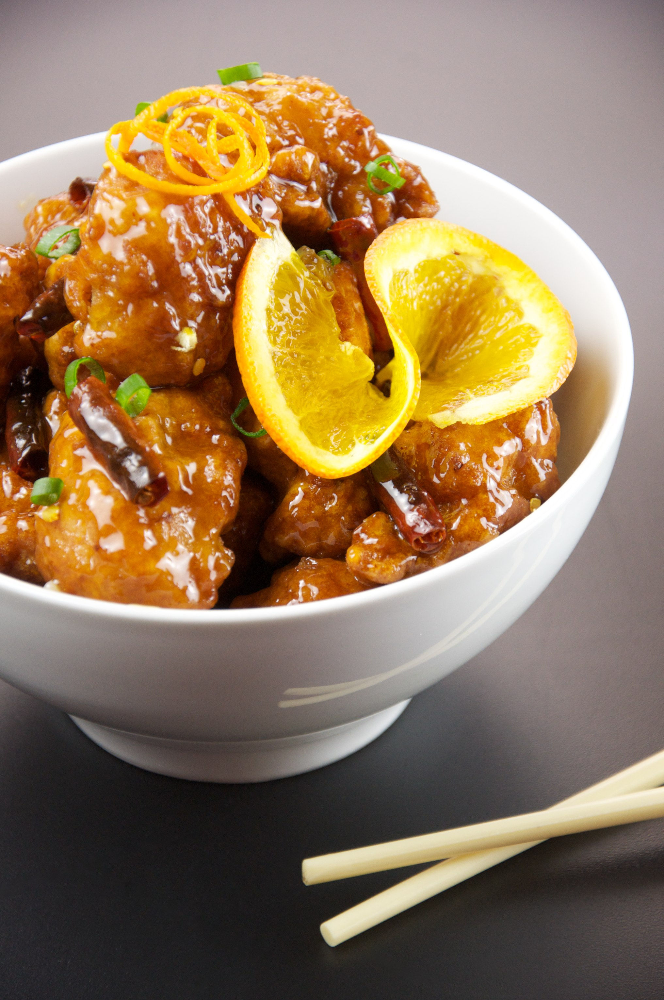

Orange Chicken

A delicous classic
I don't know about you, but I love a good plate of Orange Chicken.
There are few words other than amazing I could use to describe this dish.
Take some time out of your day and indulge with this recipe.
Cooking made easy!
Ingredients
- 1/4 cup all-purpose flower
- 4 skinless, boneless chicken breast halves - pounded to 1/4 inch thickness
- 2 tablespoons olive oil
- 1/3 cup hoisin sauce
- 1/3 cup orange juice
- 1 (11 ounce) can mandarin oranges, drained
- 1 tablespoon chopped green onions
- 1/4 cup chopped cashes
Steps
- Place flour in a small bowl. Dredge Chicken in the flour to lightly coat.
- Heat olive oil and butter in a medium skillet over medium heat,
and saute the chicken breasts until no longer pink and juices run clear.
Set aside, and keep warm.
- Stir hoisin sauce and orange juice into the skillet, and scrape up
the browned bits. Mix in mandarin oranges, green onions, and cashes, Return
chicken to the skillet. Continue cooking until all ingredients are
heated through.
Home